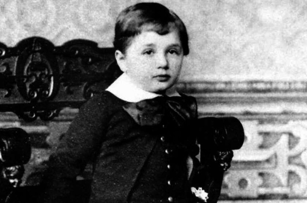
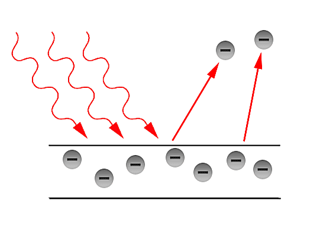
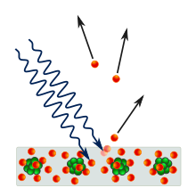

Albert Einstein was born at Ulm, in Württemberg, Germany, on March 14, 1879. Six weeks later the family moved to Munich, where he later on began his schooling at the Luitpold Gymnasium. Later, they moved to Italy and Albert continued his education at Aarau, Switzerland and in 1896 he entered the Swiss Federal Polytechnic School in Zurich to be trained as a teacher in physics and mathematics. In 1901, the year he gained his diploma, he acquired Swiss citizenship and, as he was unable to find a teaching post, he accepted a position as technical assistant in the Swiss Patent Office. In 1905 he obtained his doctor’s degree.
Albert Einstein was born to Hermann Einstein who was a salesman and engineer, and mother Pauline Einstein. During his childhood days his father once showed him a pocket compass. This made Einstein realized that having apparent empty space around still there must be something causing the needle to move. Since then Einstein showed a keen interest in mathematics and science.

Albert attended a Catholic elementary school from the age of five for three years. At the age of eight, he was transferred to the Luitpold Gymnasium (now known as the Albert Einstein Gymnasium), where he received advanced primary and secondary school education. In 1894, when their family moved to Italy he attended the Argovian cantonal school (gymnasium) in Aarau, Switzerland to complete his secondary schooling.
Albert Einstein acquired Swiss citizenship in February 1901, and later he obtained a job in Bern at the Federal Office for Intellectual Property, the patent office. He was an assistant examiner who was responsible for the evaluation of patent applications for electromagnetic devices. In 1903, Einstein's position at the Swiss Patent Office became permanent, where he fully mastered machine technology.
During same time at Bern, Einstein along with his few known friends founded “The Olympia Academy". This academy was a place for carrying discussions on science and philosophy inviting the subject enthusiasts.
1.Quantum Theory Of Light
2.Einstein's Law

3.Photoelectric Effect

4.Wave Particle Duality

| Year |
Description |
| November 12, 1913 |
Einstein was granted full membership in the Prussian Academy of Sciences. |
| November 12, 1919 |
the University of Rostock awarded an honorary doctorate of medicine (Dr. med. h.c.) to Einstein. |
| In 1925 |
the Royal Society awarded Einstein the Copley Medal. |
| In 1926 |
he was awarded the Gold Medal of the Royal Astronomical Society. |
| In 1929 |
Max Planck presented Einstein with the Max Planck medal of the German Physical Society in Berlin, for extraordinary achievements in theoretical physics. |
| In 1936 |
Einstein was awarded the Franklin Institute's Franklin Medal for his extensive work on relativity and the photo-electric effect. |
| In 1990 |
His name was added to the Walhalla temple for "laudable and distinguished Germans",which is located in Donaustauf in Bavaria. |
| In 1999 |
Time magazine named him the Person of the Century,ahead of Mahatma Gandhi and Franklin Roosevelt, among others. |
Famous Albert Einstein Quotes
Everybody is a genius, but if you judge a fish by its ability to climb a tree, it will live its whole life believing that it is stupid.
Imagination is more important than knowledge. Knowledge is limited. Imagination encircles the world.
We cannot solve our problems with the same thinking we used when we created them.
Peace cannot be kept by force; it can only be achieved through understanding.
A person who never made a mistake, never tried anything new.
Truth is what stands the test of experience.